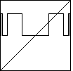

While the proof of the existence of this universal function is very subtle, there is a relatively easy way to get a picture of how complicated it looks.
| First we graph a high iterate of the logistic map with a superstable 2-cycle. |  |
| Next we graph a high iterate of the logistic map with a superstable 4-cycle, | |
| and a high iterate of the logistic map with a superstable 8-cycle. | |
| Finally, we give a hint of the fractal nature of the universal function. |
Return to Universality of the Logistic Map Bifurcation Diagram.